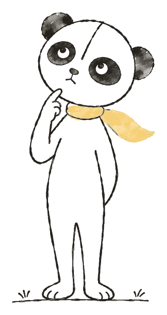
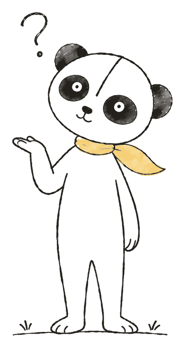
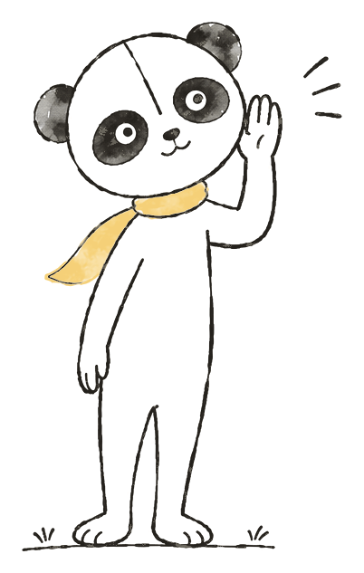
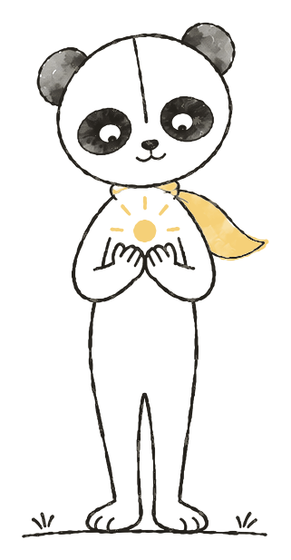

About Mimansa
The name
Mimansa is an old Indian school of reasoning. We follow its main rule: before you decide, question your own assumption and hear the strongest argument against it.
The two pillars in our logo stand for what people say at work and what they actually mean.
Why we started Mimansa
We started Mimansa to share the untold stories of HR and to ask the difficult questions.
Most of what we know in HR, we learnt by handling difficult cases. A resignation that wasn’t what it seemed. A complaint nobody could prove. A promotion that went wrong. We all learn from cases like these, and those lessons usually stay with us.
The stories and the questions go together. A story often raises a hard question, and a hard question often brings out a story. Yet HR has stopped debating its practices and patterns. We adopt them by default and don’t question them.
Mimansa is a place to share these stories, ask the questions they raise, and talk them through together.

What’s here today, and what we’re building
We’re at the start. Today you’ll find articles that question everyday HR practices, short films of real stories from Indian workplaces, and free skills to act on both. We want this to become a place where someone early in their HR career and a CHRO can look at the same case and learn from each other, and where most of what’s published comes from the people reading it.
Articles
Each one asks whether an HR practice actually works. Read the short version before a meeting, or the full article when you have time.
Read an article Video storiesStories
Real stories from Indian workplaces, shared by HR leaders. Every name is changed.
Watch a story SkillsSkills
One-page guides and templates your team can start using this quarter. Each one comes from an article.
Find a skillBefore we decide, we listen to the strongest argument against our view.

Kyun (क्यों, Hindi for “why”) is our mascot. You’ll find him asking the opening question on each article.
- Step 1
Question the claim
संशय 
Step 2Hear the other side
पूर्वपक्ष
Step 3Decide
निर्णय
How a Mimansa Shastrartha works
Mimansa Shastrartha brings the debate back. We take on the HR questions nobody asks. We debate them, and if the debate is not conclusive, we research them.
The questions come from you, the community. Before we debate one, we test it. A good question:
- has two answers people can defend
- asks why we do something, not how to do it better
- says what evidence would settle it
- is about a practice, not a whole function
- Purvapakshi पूर्वपक्षीdefends how things are done today.
- Uttarapakshi उत्तरपक्षीargues against it and offers another way.
- Madhyastha मध्यस्थthe judges: someone from HR, a researcher, and/or someone from the business. They run the debate and call the result.
- Sabha सभाall of us. We pick the questions, test them and bring evidence.
We record the debate. Then we settle it, settle part of it, or send it to research.
Is there something your company does that no one can explain? Send us the question
Want to fund research or sponsor a Mimansa Shastrartha? Reach out to us